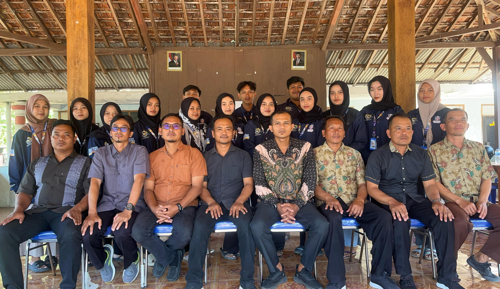

Selamat Datang di Website Resmi Desa Kedungrejo
Profil pengenalan Desa Kedungrejo dan Website resmi dari Pemerintah Desa Kedungrejo
Tentang Desa Kedungrejo
Desa Kedungrejo terletak di ujung Kecamatan Kemusu, berbatasan dengan Kabupaten Sragen di selatan Waduk Kedung Ombo, Warga Desa Kedungrejo menggantungkan hidup pada pertanian jagung, singkong, pisang, serta perikanan air tawar di Waduk Kedung Ombo..

geografis penduduk Desa Kedungrejo
Desa Kedungrejo terletak di bagian selatan Waduk Kedungombo. Topografi wilayah ini didominasi lahan tegalan yang subur, sehingga sangat mendukung budidaya jagung, singkong, dan pisang. Berdasarkan data terkini, jumlah penduduk Desa Kedungrejo mencapai 1.784 jiwa yang terbagi ke dalam delapan dusun dan 14 Rukun Tetangga (RT).